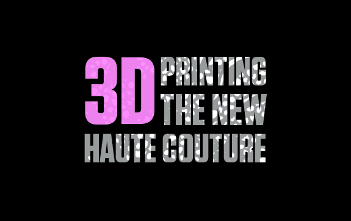
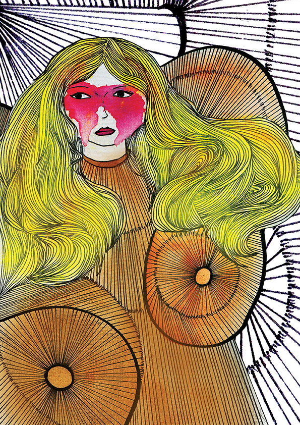

CONTOURCULTURE

Julie Dinh
3D Printing the New Haute Couture
The female body, for so long disguised and kept hidden, is trimmed and toned to fit current ideas of fitness and sexuality.
Fashion has been an influential aspect in my life. Actually, would it be bold if I said fashion is influential in everyone’s life? It’s a great way to express myself without really expressing myself. Does that make sense? Well let’s put it in another context. Fashion is a great way to showcase my mood without actually verbalizing how I feel. If I wanted to be a boy, it’s as simple as chucking on baggy pants, dirty shoes and a cap (of course you need a cap!). It’s effortless. However, fashion beyond me has more meaning. Has more significant.
As fashion has often fallen into a world of materialistic (and lets be honest, a world for snobs) there is a women who breaks away from this mold, her name, Iris Van Herpen a Dutch fashion designer. Van Herpen questions the notion of ‘fashion’ and defines it in a unique perspective. Incorporating 3D printing. Never thought of that now did you? So I’m sitting here thinking what on earth is really fashion? What the heck does fashion matter in my life? Woah! 3D printing in fashion? That’s not true. None of this fashion business really affects me cause I’m not a fashion designer, I’m a graphic designer (this is a questionable statement). Looking further into Van Herpen’s design I thought fashion has evolved beyond ‘pretentious’ fashion. Fashion has evolved into an art form.
Van Herpen was the first designer to introduce the innovative invention of 3D printing to fashion, beginning a new movement far beyond anyone’s expectations. Although Van Herpen has created a name for herself in high fashion, it wasn’t until Karl Lagerfeld, creative director of Chanel, introduced this unorthodox, yet, praised technique to mainstream fashion. However, if you asked me Chanel shouldn’t be ‘praised’ as some people are stating. He basically designed a suit that’s made from 3D printing. Praised for that? I think not.
 Going back to Van Herpen (she should be the one that’s praised). She’s breaking away from ‘traditional’ methods, thinking outside the box. She experimented with “Rapid prototyping technology of 3D printing”, which gave her her first and major breakthrough as a designer. 3D printing allows other aspiring designers to develop and imagine the impossibilities to become reality, as conventional methods are more limiting in comparison to 3D printing. She has definitely inspired me even though I’m not deep into the whole fashion shebang.
Throughout Van Herpen collection I saw the one repetitive pattern she would incorporate that truly defined her designs. She was absolutely mad and obsessed over the idea of incorporating structural designs into every garment she laid her hands on. Her design style is structurally intricate and dynamic, or put simply, edgy and futuristic; the composition of her designs would have failed if produced with conventional methods and technique. Needless to say, her mind is genius, the garments are beautifully designed that I could not stop staring. Van Herpen felt traditional materials were too soft and delicate to handle, feeling overwhelmed and limited to express her creativity she experiments with other materials. In this case, hard plastic material was the answer. She states that she wanted to build, construct, and sculpt with the materials of which she created her designs.
‘Fragile Futurity’, July 2007, was the first collection Van Herpen revealed her phenomenal 3D printed garments at Amsterdam Fashion Week. I highly recommend that you search her collection on the famous ‘Google’ search engine because it would blow your mind. You would not be disappointed. The theme of ‘Fragile Futurity’ was heavily influenced by “fusion of animal instinct and human rationality”. Van Herpen’s garments exhibited a creatively intricate sculptural approach of ‘creatures/creations.’ Capturing the textures and patterns of ‘creatures’ and incorporating with modern fashion to create an eccentric style with a twist. The main highlights of the garments were the shapes, constructed to resemble a snake, horns, wings and prints to represent a creature. However, the miraculous invention of 3D printing does not cover all the details she envisioned.
The idea is to take the most iconic jacket of the 20th century and make a 21st century version, which technically was unimaginable in the period when it was born.
The whole concept of terraforming started in science fiction, but it has become a reality.
To fully achieve her designs, she also hand crafted the details into the garments to add extra texture and patterns. Now we all know there are limits to every technological machinery out there. Something just has to be hand touched in order to achieve that fazazz we all admire.
The phenomenon of 3D printing in fashion has spread far and wide to reach the ears of Chanel. Too bad Chanel wasn’t the one that discovered it. All that fame, glory and creativity is going to someone else that actually deserves it and not to Chanel. Pity. However, I’m biting my tongue to discuss Chanel now and you can decide for yourself if Chanel should be ‘praised’. The high-end fashion house is constantly searching for new innovative ideas, to go beyond and above pushing their boundaries. Although, 3D printing is not originally their idea, Chanel is more recognised in the fashion industry. So basically, having connections and a name for yourself will make everyone listen to you. Sound about right to me.
Chanel’s Haute Couture collection, Fall/Winter 2015/2016 Fashion Week in Paris at the Grand Palais des Champs-Elysees of 7th July 2015, presents their iconic Chanel suits capturing the classic/futuristic society. Chanel’s garments are elegant and sophisticated rather than structurally dynamic. Some fashion enthusiasts believe that Chanel took a risk of incorporating two opposite ideas, that is, the timeless and futuristic concept. And to which I think it’s overly done to the point of death. Unique? I think not.
Van Herpen and Chanel designs are regarded as expressive art, rather than an ordinary mundane garment. Chanel expresses that this generation is in the modern age and people have changed. Chanel keeps up with the current trends and style allowing them to design generation after generation of new/bold creations. That is, the only rich and young generation that could afford their clothes. Van Herpen’s combination of materials, technology and techniques has created exemplary pieces of art that challenges the notion of ‘classic’ fashion. So, the main question is still unanswered. Is 3D printing garments Haute Couture? I believe it is beyond Couture, that it is an art form (more or less). Van Herpen bought fashion to a level that no other fashion designer has, and I truly believe that no other will. She has introduced a new world beyond fashion. She has introduced a new art form.